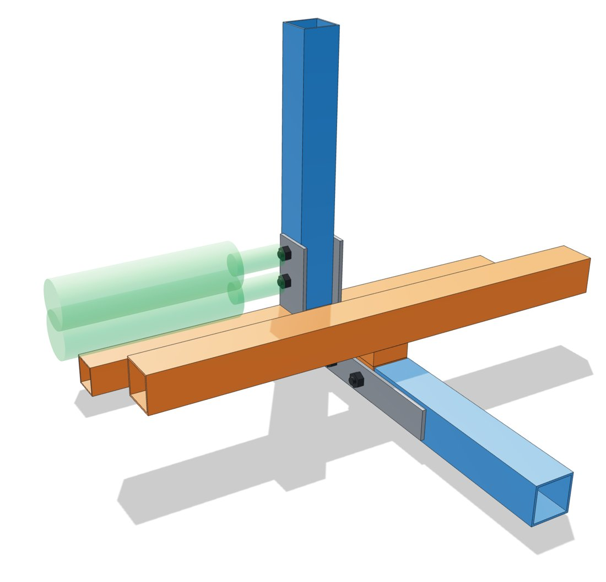

Under load
What changed
The posts moved to the tops of the diagonals, so an impact driver reaches every bolt.
Posts at the tops of the diagonals

Weight237 → 251 lb
Deflection0.44 → 0.44 in
Sway0.10 → 0.07 in
Why the trusses are above the deck
The deck sits 19 to 22 in up and needs 12 in clear over the river. That leaves about 10 in under it, so the depth goes on top.
| Rule (2027) | Limit | This bridge |
|---|---|---|
| Deck heightlimit 19 to 22 in | 19 to 22 in | 21 3/4 in |
| Clearance over the riverlimit 12 in or more | 12 in or more | 18 3/4 in |
| Envelopelimit 5 ft x 5 ft | 5 ft x 5 ft | 4 ft 6 1/8 in tall |
| Longest piece, with its plateslimit 42 in box | 42 in box | 41 5/8 in |
| Sway under 50 lblimit 3/4 in (3/8 in bonus) | 3/4 in (3/8 in bonus) | 0.07 in |
How it was designed
1. Analysis
STAAD.Pro 2026
Loads, deflection, member checks.
2. True-size joints
FreeCAD
Every plate and bolt at real size.
3. Drawings
SolidWorks 2026
Assemblies and shop sheets.
4. Joint checks
AISC 360-22
Bolts, plates and welds by hand.